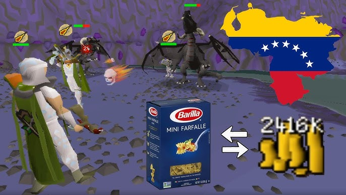

¿Matar dragones virtuales para comprar comida real?
Cuando la hiperinflación destruyó la economía venezolana, un clásico videojuego del año 2000 se convirtió en un mercado laboral de supervivencia. Lo que comenzó como una salida de emergencia terminó desatando extorsiones, mafias de clanes, persecuciones y una guerra virtual masiva donde perder una batalla significaba quedarse sin cena.
Ver caso →